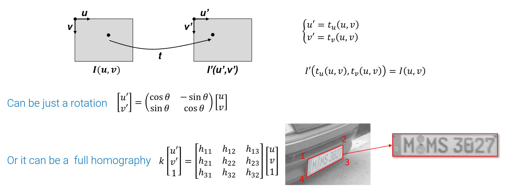
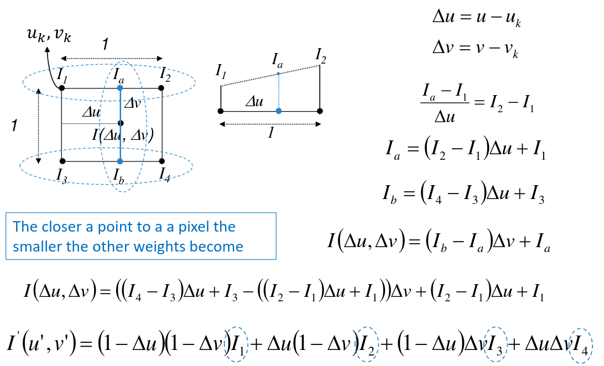

Warp
Warping refers to transformations of the spatial domain of images, while filtering refers to changes in the values of images
If we have a function that computes point in image I’ starting from point in image I, we can copy the value: 
Forward mapping
After applying the warping function in general, we get continuous coordinates, not discrete ones. Possible choices to make it discrete: truncate, neareast neighbor (i.e. rounding). Regardless of the choice of the mapping, due to rounding we can have:
- more than one pixel can go to one position (folds)
- some pixels of the destination image may not be hit (holes)
Backward mapping
As forward mapping, but the other way around, and solves the problem of the other method.
Bilinear Interpolation
Is a way of choosing the color of the pixel with the respect to the original ones 